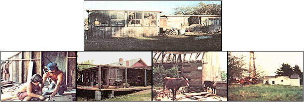

Eleven years ago, my wife-Monique?and I came across the one classified ad we'd been hoping to find for the three years we'd (at that time) known each other. It read: "Four-room country ranch. Needs minor repairs. Well water, about 3 acres of cleared land. Vacant. Must be sold, good terms."
As it turned out, the ad was only partly accurate. The house had four rooms all right . . . but it'd been vacant for three or four years, and its roof leaked, most of the building's windows had been broken by vandals, and squirrels had built a nest right over the bed (which was itself a pretty sorry sight, since mice had eaten their way into the mattress). What's more, the crawl space under the building was full of water, the driveway was covered with mud . . . and the well was only about 50 feet downhill from the cesspool!
The place did have one redeeming feature, though: it came complete with four acres (not three, as the classified ad said) of good, fertile land. And, despite the fact that it was overgrown with weeds and brush, we really wanted those four acres.
Still, we wondered (as we sat in our old VW in the muddy drive-way), whether we "city types" could ever hope to get such a ramshackle old dwelling and rundown mini-farm back on its feet. We were tempted, in fact, to leave right then and there. When the real estate agent arrived, however, and told us "It's yours for $2,900" . . . Monique and I knew we'd found our "place in the country". Within a week, we were busy tearing down walls, replacing doors and fixtures, scraping off old paint, and preparing to move in.
Monique was carrying our first son (Remi, now aged 10) back then, and we were pretty broke. Come to think of it, we were still "unmoneyed" when our second boy?Dan-was born two years later . . . but we got by. We managed?among other things?to clear away the thick brush that'd grown over our lower pasture, build a good strong barn, a stable, and a henhouse, start a garden, and remodel the inside of our old farmhouse. (Now, after eleven years, we're almost happy with the way the remodeling has gone.) Somehow, during this work, I even managed to go to college. (As if I didn't have enough to do already!)
Our garden?which currently measures about 40' X 80'?gets bigger every year (despite the fact that it's always just a bit larger than we can easily weed and cultivate), and every spring and fall we turn the soil with our old but reliable walking tractor and a spike harrow. (We used to can about half of everything we grew, but now that we have a large freezer our canning activities are pretty much limited to the "putting by" of jams, jellies, pickles, and tomatoes.)
Our animals?one cow, two beef calves, ten rabbits, and a dozen or so chickens?always eat well during the winter, and at virtually no expense to us. In the fall-after the state cuts the hay alongside the new highway?we turn and rake the cut grass furthest from the side of the road (carefully avoiding the lead?laden vegetation nearest the flow of traffic) and eventually truck home enough free fodder to last our livestock most?if not all?of the winter.
We also have permission to glean the corn that the chopper leaves in nearby fields. This year?thanks to an exceptionally inefficient harvester?we managed to collect two pickup truckloads of free corn to feed to our cow, calves, rabbits, and chickens.
Speaking of chickens, we used to have about twice as many hens and cockerels as we have now . . . until a month ago, when my Canadian farm girl wife and I decided to cull 14 birds from the flock. (We froze 12, and made the other two into 12 quarts of the most delicious home-cooked chicken noodle and chicken rice soups you can imagine.)
Over the years, we've built up the soil on our place with manure from our animals, repaired and remodeled our house, and?in general?poured so much of ourselves into these four acres that, today, there isn't a force on this earth that could make us leave our little home stead here in southern Massachusetts. We've learned that it's not easy to go from nearly 100% dependence on supermarkets and department stores to almost total self-reliance . . . but we're convinced now that such a change certainly is worth the effort involved.
Hallelujah! Is it ever worth the effort! As I write this, I'm sitting beside one of our three wood-burning stoves, listening to the Montreal Express (as the cold north wind is known locally) go howling by outside . . . and I'm so snug and warm and peaceful and secure I almost want to explode from just feelin' good! Remi and Dan are in the other room pumping on the player piano, and-believe me?the joyous din of their laughter rising above the Maple Leaf Rag is music indeed!
Another thing that makes it all worthwhile: our food. Just this morning, for instance, we helped ourselves to good, old-fashioned, stick-to-the-ribs oatmeal topped with honey from our beehives and fresh cream from Sassy (our Jersey COW). To that, add toast made on top of the kitchen cookstove and smothered with real butter that we churned ourselves the night before. Man, that's what I call good eatin'!
Very often our hearts tell us that we owe thanks for all the wonderful things we have. So sometimes we open the family Bible and sit around the fireplace, reading the sacred book and learning of the goodness it contains. Life truly is a blessing here on our little homestead.
In closing, we would like to offer one small thought to those who would go back to a simpler, more meaningful life on the land. Each sunset, strawberry, and fieldstone on the piece of land you call "home" belongs to God. When you're watching one, savoring the next, and building your shelter with the other . . . tell Him "thanks". And maybe these same treasures will be there for your children?and your children's children?to enjoy.
|
 |
|
|